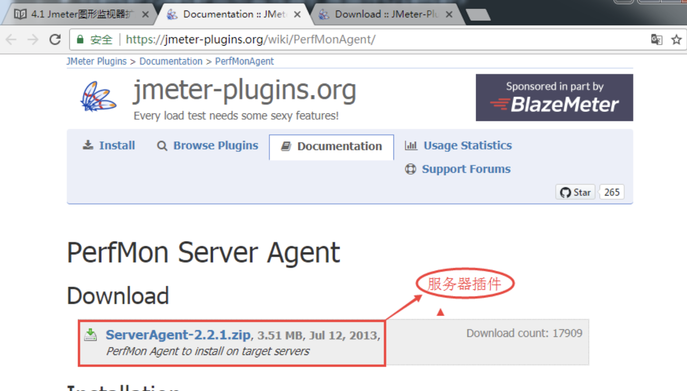
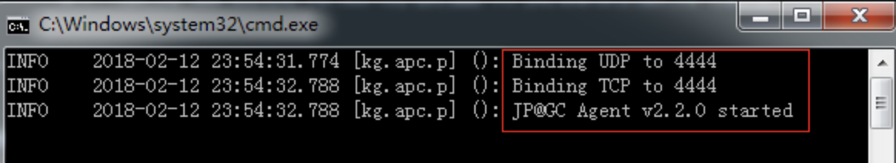
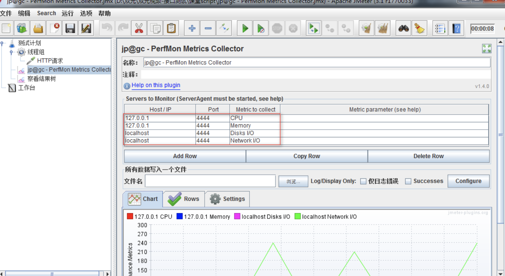

Jmeter 图形监视器扩展插件下载及使用
目标
- 了解如何在客户端下载安装第三方插件
1. 为什么要下载图形监视器扩展插件？
1.1 需求
请求(查询学院-所有)接口1000次的时候如何在客户端Jmeter工具中查看服务器(CPU、内存、网络、磁盘)的使用信息
1.2 问题
1. Jmeter工具打开监听器，没有监控服务器资源的组件
2. 服务器也没有启动被监听资源的服务程序
2. 图形监视器扩展插件有什么用？
作用：提供客户端与服务器交互时各种图形报告
2.1 解决方案分析
1. 服务器：下载服务器端监听服务程序(ServerAgent-2.2.1)
2. 客户端：下载标准扩展插件(JMeterPlugins-Standard-1.4.0.zip)
3. 启动服务器监听器程序(ServerAgent-2.2.1.zip)
4. 客户端加载监听服务器组件图表(jp@gc - PerfMon Metrics Collector)
2.2 插件下载
客户端：标准插件下载地址：https://jmeter-plugins.org/downloads/old/

使用：
1) 解压文件后，复制JMeterPlugins-Standard.jar文件
2) 将JMeterPlugins-Standard.jar粘贴到Jmeter的Lib目录下面的ext目录
3) 重启Jmeter
服务器：性能监控插件下载地址：https://jmeter-plugins.org/wiki/PerfMonAgent/

1. 解压到服务器任意目录
2.3 服务器端监听服务程序图

运行：
1) Windows启动startAgent.bat
2) Linux启动startAgent.sh
2.4 客户端监听图表插件图

1. Host/IP：服务器IP地址
2. Port：默认4444(4444为启动服务器监听服务程序时的端口号)
3. Metric to collect：选择要收集的指标（CPU、内存、网络、磁盘）
2.5 插件-总结
1. 服务器端下载监听服务程序
2. 客户端下载标准插件包
3. 标准插件包位置
4. 启动服务监听服务程序